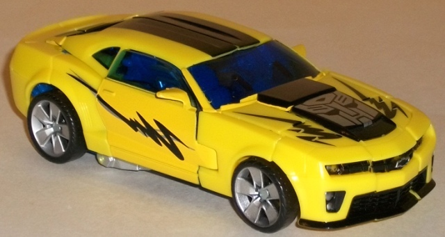
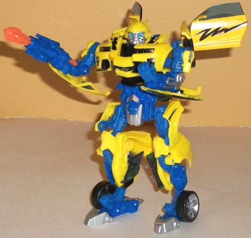
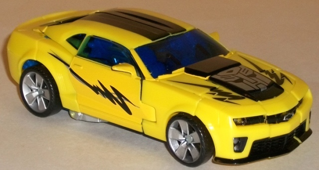
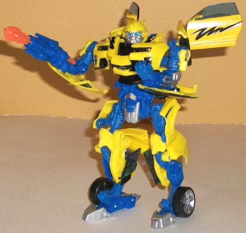
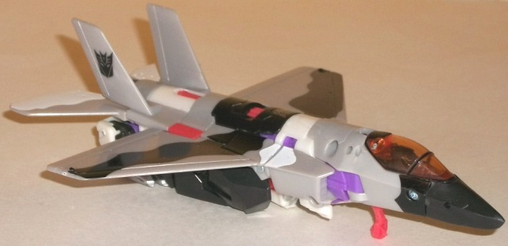
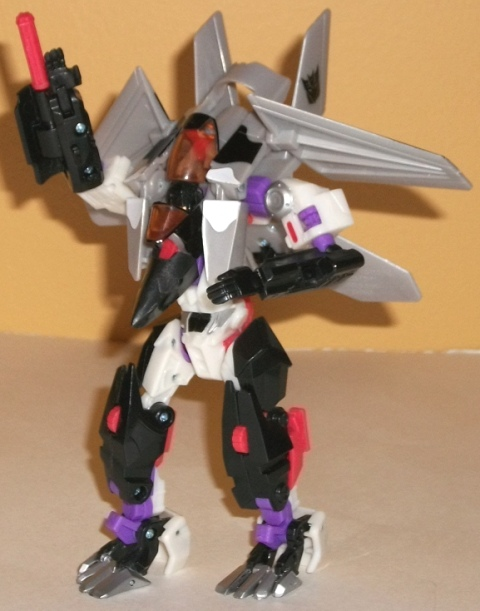

 
Allegiance : Autobot
Size : Deluxe
Difficulty of Transformation : Medium
Color Scheme : Yellow, blue, transparent dark blue, black, and some silver, bright orange, light red, and light sky blue
Individual Rating : 9.7
Set Price
: $20 U.S.
Overall Rating
: 8.8
(NOTE: Because this set is composed of repaints,
this is not a full-blown review. This mainly covers any changes made to
the set and the color scheme, and merely compares it to the original versions
of these molds. For a review on the original movie deluxe Bumblebee mold,
go
here
. For a review on Revenge of the
Fallen Breakaway-- the mold used for Thrust-- go
here
.)
 Bumblebee
Bumblebee


Allegiance
: Autobot
Size
: Deluxe
Difficulty of Transformation
: Medium
Color Scheme
: Yellow, blue, transparent
dark blue, black, and some silver, bright orange, light red, and light
sky blue
Individual Rating
: 9.7
Yeah, I know, another
movie Bumblebee repaint. But hey, as opposed to most of the "slight-variation-of-the-original-scheme"
paint jobs Bumblebee redecos usually get, this one's actually fairly interesting.
Yes, the main color is still yellow, but it's a bit more of a brighter,
more "electric" yellow. This seems emphasized by the rather cool-looking
black-and-silver "energy bolt" decos on the front hood and car doors. He
still has a black stripe down the center of his vehicle mode to keep in
with the movie Bumblebee look, though. In robot mode, he has a rather medium
shade of blue that's most prominent on his "robot parts", and it blends
quite well with the yellow. It also makes his color scheme a bit on the
bright side overall, with the black paint and the transparent dark windows
being his only dark colors. The silver paint makes for some nice accents
on the blue too, and keep his robot bits from looking too one-tone. The
safety orange missile looks really loud, but frankly it goes fairly well
with Bumblebee's louder-than-usual color scheme. And honestly, the overly
large silver Autobot symbol in vehicle mode, the fairly bright yellow matched
with this shade of blue, the unrealistic lightning decoes-- it almost makes
this look like a "G2" version of movie Bumblebee, which certainly has its
draw for those who like the louder, more varied color schemes.
This version of Bumblebee
has the same head and arm mold changes that the original RotF deluxe version
has-- he has no mold changes unique to this release, however.
 Thrust
Thrust


Allegiance
: Decepticon
Size
: Deluxe
Difficulty of Transformation
: Easy
Color Scheme
: Light milky gray,
black, white, and some transparent dull orange, silver, light purple, and
light orangish red
Individual Rating
: 7.9
Although he's still called
Thrust like the
RotF remold
of Breakaway,
the redeco job for this release is a bit reminscient of G1 Apeface. Of
course, it makes a bit of sense why Hasbro stuck with Thrust, since "Apeface"
isn't a good name for someone who JUST transforms into a jet, as opposed
to a jet/gorilla triplechanger. But regardless, the majority of Thrustface's
color scheme is made up of the rather monochromatic scheme of light, black,
and gray. By itself, it's fairly boring (although the wave camo-like lines
of black and white on Thrust's jet mode help to break things up somewhat).
However, it's the ACCENT colors that really make this color scheme, in
my opinion. The light orangish red is a really eye-catcing color, and contrasts
well with all of the main colors (and fits in fairly well thematically
with the transparent orange cockpit, as well). Same with the light purple
bits (and it's fitting on a Decepticon, as well). Add in a few nice silver
paint apps on some bits like the waist and feet, and overall this deco
of Thrust is looking might good, particularly since there isn't any particularly
large portion of the same color that dominates any part of the toy, due
to all the neat paint apps.
Autobot Alliance Thrust
has the same new head mold as RotF Thrust, but otherwise has no mold changes
from RotF Breakaway. However, there a few minor signs of mold degreadation--
Thrust's head doesn't turn very well in its ball joint, and on mine one
of the hip ball joints is a little loose. Nothing so bad it ruins the toy
by any means, but worth noting.
I'd wholeheartedly recommend the "Crash Landing Attack" set if you fit into either of these two categories: A. You don't have the previous versions of these molds and/or B. like your paint jobs a bit more on the louder, less realistic side. Both Bumblebee and Thrust, I think, have superior color schemes to all their molds' previous iterations (or, in the case of Bumblebee, is at least tied for the best). They've both got quite a few paint apps, interesting color schemes that go quite well together, and given that you're getting them both for a little less than retail there's not much to keep you from holding back unless you either hate movie molds or already have enough Bumblebees and absolutely will not get anymore.
Reviews by Beastbot